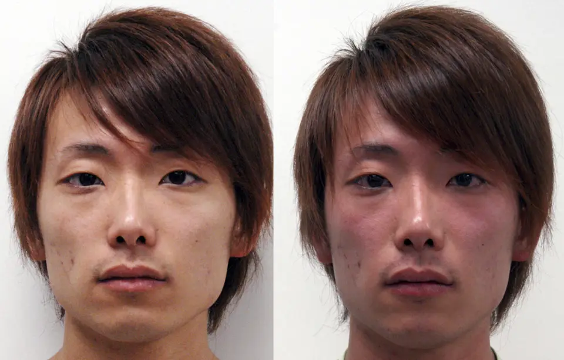

DX.5 — Flush lié à l’alcool
1. Définition
2. Épidémiologie (Suisse, puis Europe)
| Indicateur | Valeur (source) | Lecture pour le candidat |
|---|---|---|
| Flush à l'alcool | Environ 36 % des Asiatiques de l'Est (Brooks, 2009). | Les patients d'origine asiatique sont concernés en Suisse ; la part exacte est inconnue. |
| Déficit en ALDH2 | Au moins 540 millions de personnes, soit environ 8 % de la population mondiale (Brooks, 2009). | Chez un patient d'Asie de l'Est, le déficit s'évoque d'emblée. |
| Activité enzymatique | Réduite de plus de 100 fois chez les hétérozygotes (Brooks, 2009). | Une seule copie du variant suffit à provoquer le flush. |
| Mortalité | La mortalité vient du cancer de l'œsophage associé au déficit en ALDH2, non du flush isolé. | Le flush isolé ne tue pas ; il signale un risque. |
| Cancer de l'œsophage | 58 à 69 % du risque excédentaire attribuable à la boisson chez les hétérozygotes (études cas-témoins japonaises et taïwanaises). | Le flush est un marqueur de risque oncologique, pas seulement une gêne. |
| Réaction au métronidazole | Fréquence incertaine, gravité variable (Mergenhagen, 2020). | L'AIPS maintient l'avertissement ; la réalité de l'effet reste débattue.3,5 |
Distribution. Le déficit en ALDH2 est génétique et touche les deux sexes. Il apparaît dès les premières consommations. Les causes médicamenteuses et les maladies sous-jacentes apparaissent à tout âge. Les enjeux sont la sécurité du patient sous aversif, le dépistage du cancer de l'œsophage et l'exclusion des causes graves.1,4
3. Physiopathologie
Amorce (moléculaire). L'ADH est l'enzyme qui oxyde l'éthanol en acétaldéhyde. L'ALDH2 est l'enzyme qui transforme ensuite l'acétaldéhyde toxique en acétate. L'allèle ALDH2*2 est à l'origine d'une protéine inactive.1
Développement (cellulaire). Chez l'hétérozygote, l'activité tombe à moins de un centième de la normale. Le disulfirame bloque la même enzyme de façon sélective, au niveau du foie. L'acétaldéhyde s'accumule alors dans les tissus, car il n'est plus dégradé.1,2
Installation (tissulaire). L'acétaldéhyde provoque une vasodilatation cutanée : rougeur, chaleur, sueurs et palpitations. Le flush atteint le visage, puis le tronc et les membres. Dans les formes sévères, la vasodilatation entraîne hypotension et collapsus.2
Maintien (clinique). La réaction apparaît 5 à 10 minutes après l'alcool15104. Elle dure jusqu'à l'élimination de l'acétaldéhyde, soit plusieurs heures. Après le disulfirame, l'enzyme est resynthétisée en une semaine ou davantage. Une réaction reste possible jusqu'à trois semaines après l'arrêt.2
| Lésion ou perturbation | Exploration qui la montre | Thérapeutique qui la corrige (mécanisme) |
|---|---|---|
| ALDH2 inactive (variant Glu487Lys) | Questionnaire de flush ; génotypage ; test cutané à l'éthanol. | Éviter ou limiter l'alcool : aucun médicament ne rétablit l'enzyme. |
| ALDH bloquée par un médicament | Revue des médicaments ; chronologie de la prise. | Arrêter l'alcool ; adapter le médicament. L'enzyme repousse en une semaine ou plus. |
| Vasodilatation avec hypotension | PA couchée et debout ; ECG. | Allonger, surveiller, soutenir la circulation ; l'adrénaline ne vise que l'anaphylaxie. |
| Maladie sous-jacente (carcinoïde, mastocytose, rosacée) | 5-HIAA urinaire, tryptase, examen cutané4. | Traitement de la maladie selon les chapitres DX.2, DX.9 et DX.114. |
4. Démarche diagnostique
| Drapeau rouge | Diagnostic à exclure | Signe ou examen qui tranche | Piège classique | Conduite immédiate |
|---|---|---|---|---|
| 🚩 Hypotension, syncope, douleur thoraciqueUne vasodilatation massive provoque un collapsus. La réaction à l'aversif peut simuler un spasme coronaire et atteindre le cœur. | Réaction sévère de type disulfirame. | Prise d'Antabus ou de métronidazole, alcool récent, ECG et PA. | La douleur thoracique n'est pas toujours coronarienne. | Allonger le patient, surveiller, ECG, voie veineuse. |
| 🚩 Urticaire, angio-œdème, stridor, sifflementUne anaphylaxie menace les voies aériennes en minutes. L'alcool peut la favoriser ou révéler une mastocytose. | Anaphylaxie, mastocytose. | Signes cutanés, respiratoires et circulatoires associés ; tryptase. | Le flush seul ne suffit pas à parler d'anaphylaxie. | Adrénaline par voie intramusculaire. |
| 🚩 Diarrhée, bronchospasme, souffle cardiaqueCes signes accompagnent la sérotonine sécrétée par une tumeur neuroendocrine. | Syndrome carcinoïde (DX.9)4. | 5-HIAA urinaire des 24 heures4. | Flush présent aussi sans alcool. | Dosage urinaire, imagerie selon DX.94. |
| 🚩 Douleur déclenchée par l'alcool, adénopathies, fièvre, sueurs nocturnesUne douleur à l'alcool est rare mais connue dans le lymphome de Hodgkin. | Lymphome de Hodgkin. | Palpation des aires ganglionnaires, imagerie thoracique.6 | La douleur, pas le flush, est le signe clé. | Imagerie et avis hématologique. |
| 🚩 Hypertension paroxystique, céphalée, sueursUne décharge de catécholamines produit ces crises. Le flush est rare, la pâleur fréquente. | Phéochromocytome (DX.10)6. | Métanéphrines plasmatiques ou urinaires. | Un flush franc oriente plutôt vers un autre diagnostic. | Dosage ; jamais de bêtabloquant avant l'alphabloquant. |
Sans drapeau rouge, le médecin doit procéder par étapes. Il date d'abord le flush par rapport à l'alcool, puis recherche un médicament. Il évalue ensuite l'origine ethnique et les antécédents familiaux, et cherche un flush sans alcool. Il examine enfin la peau et les signes associés, pose le diagnostic clinique et complète seulement si un signe oriente.4
5. Anamnèse ciblée et drapeaux rouges
L'anamnèse caractérise d'abord le flush, typique ou non : délai après le verre, ancienneté, extension et signes associés. Elle recherche ensuite les médicaments, l'origine, les antécédents familiaux et la consommation ; la fenêtre des questions clés précise ce que chaque réponse change.
Les drapeaux rouges imposent une action. L'hypotension ou le stridor constitue une urgence : le médecin donne l'adrénaline et hospitalise. Une douleur thoracique impose un ECG. Une diarrhée ou un bronchospasme impose le dosage du 5-HIAA et un avis spécialisé4. Des adénopathies imposent une imagerie et un avis hématologique. Une HTA paroxystique impose les métanéphrines.4
6. Examen physique ciblé, région par région
Le médecin doit commencer par les signes vitaux, puis examiner la peau et les territoires associés. Aucun signe n'est spécifique de la cause. Un signe tire sa valeur de son association à l'anamnèse.4
Devant un flush lié à l'alcool, l'examen suit l'ordre topo-systémique en quatre temps : signes vitaux ; peau et face ; cœur et poumons ; abdomen et aires ganglionnaires.
Le cliché commenté « Flush facial de l'hétérozygote ALDH2*2 avant et après alcool » montre ce flush, brut puis annoté1.
7. Approche syndromique
7.1 Syndrome acétaldéhyde (déficit en ALDH2 ou réaction aux aversifs)4.
| Type | Signe | Recherche | Mécanisme |
|---|---|---|---|
| Fonctionnel | sensation de chaleur et de brûlure facialeRessenti de chaleur du visage, des oreilles et du cou, quelques minutes après l'alcool. | Interroger sur le délai et le type de boisson. | Vasodilatation cutanée par l'acétaldéhyde. |
| Fonctionnel | palpitations et nauséesBattements ressentis et envie de vomir, associés au flush. | Interroger ; mesurer le pouls pendant la crise. | Effet de l'acétaldéhyde sur le cœur et le tube digestif. |
| Physique | érythème facial extensifRougeur diffuse du visage, qui gagne le tronc puis les membres. | Inspecter pendant la crise, de la face aux membres. | Vasodilatation cutanée. |
| Physique | tachycardie et hypotensionPouls supérieur à 100 par minute ; PA systolique en baisse4. | Pouls et PA couché, puis debout. | Vasodilatation et réponse réflexe. |
7.2 Syndrome du flush révélateur : il oriente vers une maladie sous-jacente4.
| Type | Signe | Recherche | Mécanisme |
|---|---|---|---|
| Fonctionnel | flush spontanéRougeur survenant sans alcool, à la chaleur, à l'effort ou aux émotions. | Demander les autres déclencheurs. | Médiateur vasoactif : sérotonine, histamine ou catécholamines. |
| Fonctionnel | diarrhée aqueuseSelles liquides répétées, associées au flush. | Interroger sur fréquence et lien avec le flush. | Sérotonine d'une tumeur neuroendocrine. |
| Physique | papules, télangiectasiesPetites lésions rouges et vaisseaux dilatés des joues. | Inspecter joues et nez. | Réactivité vasculaire de la rosacée. |
| Physique | signe de DarierUrticaire locale après frottement d'une tache pigmentée. | Frotter doucement la lésion ; lire à 5 minutes4. | Dégranulation des mastocytes. |
8. Diagnostic positif et critères
Il n'existe aucun critère de société savante pour le flush à l'alcool. Le diagnostic est clinique.1,4
| Situation clinique | Seuil | Suffit-il ? |
|---|---|---|
| Délai de 5 à 10 minutes après l'alcool, reproductible1 | Dès les premiers verres, avec des boissons variées. | Oui pour un déficit en ALDH2 chez un patient d'Asie de l'Est, sans flush spontané. |
| Questionnaire de flush à deux questions | Environ 90 % de sensibilité et de spécificité pour le déficit en ALDH2 (Brooks, 2009)1. | Oui comme dépistage, pas comme preuve génétique. |
| Médicament aversif récent | Disulfirame ou métronidazole, alcool dans les jours qui suivent. | Probable ; l'arrêt du médicament confirme. |
| Flush isolé, sans orientation | — | Non : il ne distingue pas les causes. |
Un flush isolé ne suffit pas au diagnostic de cause. Le questionnaire seul ne suffit pas à prouver le déficit génétique.
9. Examens complémentaires
9.a Gold standard. Le génotypage de l'ALDH2 (variant Glu487Lys) prouve le déficit.1
9.b Première intention. Le questionnaire de flush et la revue des médicaments suffisent si le tableau est typique1. Aucun examen n'est prescrit si le tableau est typique.
9.c Alternatives. Le test cutané à l'éthanol (patch) a une sensibilité et une spécificité supérieures à 90 % chez les jeunes Japonais1. Il ne comporte ni irradiation ni produit de contraste : il convient à la grossesse, à l'enfant et à l'insuffisance rénale.1
9.d Deuxième intention. On cherche une maladie sous-jacente si un flush survient sans alcool ou avec signes associés4. Les seuils chiffrés figurent dans les chapitres concernés.4
Un flush spontané avec diarrhée fait doser le métabolite urinaire de la sérotonine ; une urticaire, la tryptase sérique. Une hypertension paroxystique fait doser les métanéphrines, et une douleur thoracique pendant la crise impose un ECG.
10. Arbre décisionnel
L'arbre doit commencer par les urgences, puis chercher le mécanisme.
| Nœud | Si… (signe ou résultat) | → Alors (décision ou geste) |
|---|---|---|
| 1 🚩 | Hypotension, syncope ou stridor après l'alcool. | → Allonger le patient, surveiller, voie veineuse ; adrénaline IM si anaphylaxie. |
| 2 🚩 | Douleur thoracique pendant la réaction. | → ECG et surveillance monitorée. |
| 3 | Patient sous Antabus ou métronidazole. | → Arrêter l'alcool ; revoir l'indication du médicament. |
| 4 | Flush dès les premiers verres, origine d'Asie de l'Est, pas de flush spontané. | → Diagnostic de déficit en ALDH2 ; conseil sur le risque de cancer de l'œsophage. |
| 5 | Flush aussi sans alcool, ou signes associés. | → Examen complémentaire de 2e intention (point 9.d) et chapitres DX.2, DX.9, DX.10, DX.114. |
| 6 | Douleur déclenchée par l'alcool avec adénopathies. | → Imagerie et avis hématologique. |
11. Prise en charge selon les recommandations suisses
Les consignes suisses viennent de l'AIPS des médicaments en cause ; les doses suivent donc l'AIPS seul.2,3
11.A But thérapeutique.
| Horizon | But |
|---|---|
| Minutes à heures | Rétablir la PA et exclure l'anaphylaxie ; la réaction dure de 30 à 60 minutes à plusieurs heures15104. |
| Jours | Supprimer le déclencheur : alcool ou médicament en cause. |
| Long terme | Éviter toute nouvelle réaction et réduire le risque de cancer de l'œsophage. |
Le but chiffré sous Antabus est de garder les transaminases sous 3 fois la limite supérieure de la norme, car au-delà de ce seuil l'AIPS contre-indique le médicament15104. Le but chiffré en urgence est de rétablir la PA, la réaction pouvant durer de 30 à 60 minutes à plusieurs heures15104.
11.B Moyens. L'ordre répond à la gravité : urgence, arrêt du déclencheur, mesures générales, puis traitement de la cause15104.
Urgence — conduite chronologique : réaction sévère avec collapsus.
| Temps | Geste | Pourquoi |
|---|---|---|
| 0 min | Arrêter l'alcool et le médicament ; allonger le patient, jambes surélevées. | La vasodilatation exige le décubitus (AIPS Antabus). |
| 0–5 min | Mesurer PA, pouls, SpO2 ; poser une voie veineuse ; appeler le 144 si instabilité. | Le collapsus peut menacer le pronostic vital. |
| 0–5 min, sans attendre la voie veineuse15104 | Si urticaire, stridor ou sifflement : adrénaline IM (Epipen®DCI : adrénaline. Classe : agoniste adrénergique alpha et bêta, traitement d'urgence de l'anaphylaxie (ATC C01CA24). Groupe : sympathomimétiques cardiaques (C01CA). Chefs de file : adrénaline, noradrénaline, dopamine. Indications : réaction allergique immédiate (anaphylaxie) ; injecteur prérempli à usage d'urgence. Posologie AIPS : adulte et enfant de plus de 30 kg 0,3 mg par voie intramusculaire ; enfant de 15 à 30 kg 0,15 mg (Epipen Junior) ; si la dose est insuffisante, un second injecteur est possible ; consulter ensuite un médecin)53836. | Une anaphylaxie coexiste parfois avec le flush. |
| 10–30 min | ECG ; remplissage par NaCl isotonique si l'hypotension persiste. | Écarter l'ischémie ; remplacer le volume vasculaire. |
| Ensuite | Surveiller jusqu'à la fin de la réaction ; hospitaliser si instabilité. | La réaction dure tant qu'il reste de l'alcool dans le sang. |
Hors urgence. Les mesures générales consistent à arrêter l'alcool, à informer sur les alcools cachés et à rassurer. Le médecin adapte le médicament en cause. Pour le déficit en ALDH2, le traitement non pharmacologique est le conseil d'abstinence ou de modération.1,2
| Situation | Conduite |
|---|---|
| Sous Antabus®DCI : disulfirame. Classe : inhibiteur de l'aldéhyde déshydrogénase, aversif de l'alcool (ATC N07BB01). Groupe : médicaments utilisés dans la dépendance à l'alcool (N07BB). Chefs de file : disulfirame, acamprosate, naltrexone. Indications : traitement de soutien de l'alcoolisme chronique et périodique, associé à une prise en charge non médicamenteuse. Posologie AIPS : instauration 2 comprimés effervescents de 400 mg par jour pendant 3 jours après environ 3 jours sans alcool ; entretien ½ comprimé de 400 mg par jour ou 1 comprimé tous les 2 jours ; contre-indiqué pendant la grossesse ; sécurité non établie avant 18 ans15104 | Aucun alcool, même caché (sirops, sauces, after-shave). Attendre une semaine après l'arrêt ; une réaction reste possible jusqu'à 3 semaines15104. Contrôler les transaminases toutes les 2 semaines pendant 3 mois15104. |
| Sous Flagyl®DCI : métronidazole. Classe : antibiotique et antiparasitaire nitro-imidazolé (ATC J01XD01). Groupe : nitro-imidazolés (J01XD). Chefs de file : métronidazole, tinidazole, ornidazole. Indications : infections à bactéries anaérobies, amibiase, trichomonase, lambliase, vaginite à Gardnerella. Posologie AIPS : infections anaérobies 1,5 g par jour en 3 prises, au moins 10 jours ; amibiase 500 mg 3 à 4 fois par jour pendant 7 à 10 jours ; trichomonase 2 g en dose unique ; contre-indiqué au 1er trimestre de grossesse26313 | Aucun alcool ni médicament contenant de l'alcool pendant le traitement et le jour suivant. |
| Dépendance alcoolique associée | Si le patient est dépendant, Campral®DCI : acamprosate. Classe : anti-craving, modulateur glutamatergique (ATC N07BB03). Groupe : médicaments utilisés dans la dépendance à l'alcool (N07BB). Chefs de file : disulfirame, acamprosate, naltrexone. Indications : maintien de l'abstinence après le sevrage alcoolique, associé à d'autres mesures. Posologie AIPS : 2 comprimés pelliculés 3 fois par jour, pendant 6 à 12 mois ; contre-indiqué en cas d'insuffisance rénale (créatinine sérique supérieure à 120 µmol/L) et pendant l'allaitement ; non étudié avant 18 ans et après 65 ans maintient l'abstinence après le sevrage53090. L'aversif n'est pas obligatoire. |
| Urticaire associée | Un antihistaminique H1 comme Cétirizine Stada®DCI : cétirizine. Classe : antihistaminique H1 de 2e génération (ATC R06AE07). Groupe : antihistaminiques pour usage systémique, dérivés de la pipérazine (R06AE). Chefs de file : cétirizine, lévocétirizine, hydroxyzine. Indications : rhinite allergique, conjonctivite allergique, urticaire idiopathique chronique. Posologie AIPS : adulte et adolescent de plus de 12 ans 10 mg une fois par jour58941 traite l'urticaire idiopathique chronique. Il ne traite pas le flush. |
| Déficit en ALDH2 | Éviter l'alcool ou en boire très peu. Masquer le flush ne réduit pas l'exposition à l'acétaldéhyde. |
Situations spéciales. Grossesse : Antabus est contre-indiqué ; il est déconseillé pendant l'allaitement, sauf nécessité absolue15104 ; Flagyl est contre-indiqué au 1er trimestre26313. L'allaitement est contre-indiqué sous Flagyl pendant le traitement et jusqu'à 24 heures après la dernière prise26313. Enfant : la sécurité d'Antabus reste non établie avant 18 ans15104. Insuffisance hépatique ou rénale avancée : Antabus est contre-indiqué15104. Chez le sujet âgé, le médecin doit surveiller la PA.2,3
Social et professionnel. Un flush isolé ne justifie pas d'arrêt de travail. Sous aversif, la fatigue peut altérer la conduite (AIPS Antabus). La prise est idéalement supervisée par un accompagnant.2
Médicaments cités. Chaque ligne suit l'AIPS de sa propre molécule ; la voie est orale, sauf mention contraire.
| Molécule et spécialité | Dose AIPS | Voie et durée | Contre-indication majeure |
|---|---|---|---|
| Disulfirame, Antabus®15104 | 2 comprimés effervescents de 400 mg par jour pendant 3 jours, puis ½ comprimé par jour ou 1 comprimé tous les 2 jours15104. | Orale, dans un demi-verre d'eau ; l'instauration suit environ 3 jours sans alcool. | Grossesse, hépatopathie ou affection cardiaque sévère, épilepsie, psychose, risque de suicide. |
| Métronidazole, Flagyl®26313 | Infections à germes anaérobies : 1,5 g par jour en 3 prises ; amibiase : 500 mg 3 à 4 fois par jour ; trichomonase : 2 g en dose unique26313. | Orale, au moins 10 jours pour les anaérobies et 7 à 10 jours pour l'amibiase. | 1er trimestre de la grossesse ; allaitement pendant le traitement et 24 heures après la dernière prise. |
| Acamprosate, Campral®53090 | 2 comprimés pelliculés 3 fois par jour. | Orale, pendant 6 à 12 mois. | Insuffisance rénale (créatinine sérique supérieure à 120 µmol/L) et allaitement. |
| Cétirizine58941 | 10 mg une fois par jour chez l'adulte et l'adolescent de plus de 12 ans58941. | Orale, en une prise quotidienne. | Insuffisance rénale terminale (débit de filtration glomérulaire inférieur à 15 mL/min). |
| Adrénaline, Epipen®53836 | 0,3 mg chez l'adulte ; 0,15 mg avec Epipen Junior pour un enfant de 15 à 30 kg53836. | Intramusculaire, une seule injection ; une seconde est possible 5 à 15 minutes plus tard si l'effet est insuffisant. | Aucune dans l'anaphylaxie, car l'adrénaline reste indispensable à son traitement. |
Interactions majeures. Antabus ne doit pas être utilisé chez un patient sous métronidazole, car l'association peut entraîner un état confusionnel et des réactions psychotiques aiguës15104. Il peut aussi augmenter la concentration de la phénytoïne, renforcer les benzodiazépines comme le diazépam et allonger le temps de prothrombine, ce qui peut exiger une adaptation de la warfarine15104. Le métronidazole augmente en outre les concentrations de lithium et de ciclosporine, et il réduit la clairance du 5-fluorouracile26313. Le Campral ne modifie pas la pharmacocinétique du disulfirame, et les deux médicaments ont souvent été associés sans signe d'interaction53090.
Pharmacologie du disulfirame. Le disulfirame appartient à la classe des inhibiteurs de l'aldéhyde déshydrogénase. Sa biodisponibilité atteint 80 à 90 % sous forme effervescente, car la forme microcristalline augmente la surface d'absorption15104. Le métabolite principal, le diéthyl-dithiocarbamide, a une demi-vie plasmatique d'environ 12 heures15104. L'inhibition de l'enzyme est en partie irréversible, de sorte qu'elle peut persister de 7 à 21 jours après l'arrêt15104. Le disulfirame inhibe aussi la dopamine bêta-hydroxylase, ce qui diminue la synthèse de noradrénaline15104.
Ce que le patient doit savoir sous disulfirame. Les effets indésirables fréquents sont la fatigue, l'insomnie, les céphalées, la mauvaise haleine et un goût métallique dans la bouche15104. Une atteinte hépatique est rare, mais elle peut évoluer vers une hépatite aiguë, parfois mortelle. Le patient doit donc signaler la fatigue, les nausées, le prurit, l'ictère, les urines foncées ou les selles décolorées15104. Une névrite optique ou une polyneuropathie exige l'arrêt immédiat du médicament15104. Le médecin note « CT sic » sur l'ordonnance pour rappeler le contrôle des transaminases15104. Le patient accepte le traitement en connaissance de cause, car l'AIPS interdit de l'administrer à son insu15104.
Seuils d'alcoolémie. La réaction au disulfirame est dose-dépendante. Une réaction faible apparaît dès 5 à 10 mg d'alcool pour 100 mL de sang, la symptomatologie complète à 50 mg, et une perte de connaissance au-delà de 125 à 150 mg15104. Des modifications transitoires de l'ECG surviennent fréquemment : aplatissement des ondes T, sous-décalage du segment ST et allongement de l'intervalle QT15104. Une douleur thoracique peut simuler un spasme coronaire, ce qui justifie l'ECG15104.
Pharmacologie de l'acamprosate. L'acamprosate est un modulateur du récepteur NMDA qui rétablit l'équilibre entre le système inhibiteur du GABA et le système excitateur du glutamate53090. Sa biodisponibilité à jeun est de 11 %, et son excrétion est essentiellement rénale, ce qui explique la contre-indication en cas d'insuffisance rénale53090. La demi-vie plasmatique atteint de 13 à 33 heures après une prise orale53090. L'effet indésirable le plus fréquent est la diarrhée, observée chez 16 % des patients sous Campral contre 10 % sous placebo53090. Après 180 jours, 35 % des patients sous Campral restent abstinents, contre 25 % sous placebo53090. Le médecin surveille aussi les signes de dépression ou de comportement suicidaire, car la dépendance alcoolique les favorise53090.
Pharmacologie du métronidazole. Le métronidazole est résorbé à au moins 80 % par voie digestive26313. Après une dose unique de 500 mg, le pic plasmatique de 11,5 à 13 µg/mL survient en 1 à 3 heures26313. L'AIPS décrit un « effet Antabus » du métronidazole, avec flush, vomissements et tachycardie, et demande au patient de renoncer à l'alcool pendant le traitement et le jour suivant26313. L'association avec le disulfirame peut en outre prédisposer à la psychose26313.
Pharmacologie de la cétirizine. La cétirizine est un antihistaminique H1 qui pénètre moins dans le système nerveux central que les antihistaminiques de première génération58941. Elle traite l'urticaire idiopathique chronique, mais elle ne corrige pas le flush de l'acétaldéhyde, car la vasodilatation vient de l'acétaldéhyde15104. Le médecin adapte la dose en cas d'insuffisance rénale. Le patient non dialysé reçoit un demi-comprimé tous les 2 jours pour un débit de filtration glomérulaire de 15 à moins de 30 mL/min58941.
Après l'injection d'adrénaline. Le médecin appelle un service d'urgence en mentionnant le terme « anaphylaxie », même si les symptômes semblent s'améliorer53836. Le patient conscient s'allonge, de préférence les pieds surélevés, mais il s'assoit en cas de troubles respiratoires53836. Le patient inconscient est placé en position latérale de sécurité53836. Une personne reste auprès du patient jusqu'à l'arrivée du médecin d'urgence53836. L'injecteur ne sert qu'une fois, et un second injecteur est utilisé 5 à 15 minutes plus tard si le premier effet est insuffisant53836.
Précautions complémentaires. Sous disulfirame, le médecin surveille de près le patient atteint de diabète sucré, d'hypothyroïdie, d'asthme, d'eczéma de contact allergique ou de trouble cardiovasculaire. Le médicament peut pourtant y être pris sans danger ; il suffit que cette surveillance reste étroite15104. La réaction peut aussi survenir avec des doses extrêmement faibles d'alcool, par exemple une lotion after-shave ou un chocolat contenant de l'alcool15104. Les troubles rénaux ou cardiovasculaires graves restent des contre-indications15104. Les antiacides contenant des cations divalents et les fortes doses de sels de fer réduisent l'absorption du disulfirame15104. Le disulfirame bloque en outre l'oxydation et l'excrétion rénale de la rifampicine15104.
Précautions sous métronidazole et acamprosate. Chez le patient dont l'anamnèse révèle une anomalie hématologique, le médecin demande une numération leucocytaire avant et après le traitement par métronidazole26313. Il réduit la dose et surveille la concentration plasmatique en cas d'insuffisance hépatique grave26313. Pour l'acamprosate, la prise simultanée d'aliments réduit d'environ 20 % la biodisponibilité absolue53090. L'association avec le diltiazem peut aggraver un angor53090. L'acamprosate ne convient pas au traitement de la phase de sevrage, car il sert au maintien de l'abstinence après ce sevrage53090.
Surdosage en disulfirame. Des doses jusqu'à 6 g par jour sont relativement peu toxiques chez l'être humain15104. Le surdosage provoque des vomissements, des céphalées, de l'apathie, de l'ataxie, des hallucinations, des psychoses, une perte de connaissance et des convulsions15104. Le traitement associe l'aspiration gastrique, le charbon actif, d'éventuels laxatifs et des mesures symptomatiques de soutien15104. Le décès survient par arrêt respiratoire, précédé d'une paralysie ascendante15104.
Critères de sortie. Le patient quitte la surveillance lorsque la réaction est terminée, que la PA est stable et que le flush a disparu. La réaction dure en effet aussi longtemps qu'il reste de l'alcool dans le sang15104.
11.C Surveillance. Sous Antabus, le médecin doit contrôler les transaminases toutes les 2 semaines pendant 3 mois, puis tous les 3 à 6 mois15104. Il arrête le traitement si elles dépassent 3 fois la norme15104. Il recherche la fatigue, l'ictère et les urines foncées.2
11.D Pronostic. Le flush isolé est bénin et disparaît à l'arrêt du déclencheur1. Chez l'hétérozygote qui boit beaucoup, le risque de cancer de l'œsophage est élevé.1
12. Prévention
| Niveau | Geste | Cible |
|---|---|---|
| Primaire | Informer que le flush à l'alcool signale un risque de cancer de l'œsophage ; conseiller l'abstinence ou la modération. | Patients d'Asie de l'Est, consommateurs d'alcool. |
| Primaire | Avertir de ne jamais boire sous disulfirame ou métronidazole. | Patients sous ces médicaments. |
| Secondaire | Demander le flush par questionnaire (deux questions). | Consommateurs réguliers d'origine asiatique. |
| Tertiaire | Éviter toute récidive ; suivre les transaminases sous Antabus. | Patients ayant eu une réaction. |
13. Points clés
Le flush à l'alcool signe une accumulation d'acétaldéhyde, par déficit en ALDH2 ou par blocage médicamenteux.
Le patient sous Antabus ne boit jamais d'alcool, même caché, et reste à risque jusqu'à trois semaines après l'arrêt.
Le patient sous Flagyl évite l'alcool pendant le traitement et le jour suivant.
Le médecin traite toute hypotension ou tout stridor comme une urgence : décubitus, voie veineuse, adrénaline en cas d'anaphylaxie.
Le médecin cherche un flush sans alcool, car il oriente vers carcinoïde, mastocytose ou rosacée.
Le déficit en ALDH2 expose au cancer de l'œsophage : le médecin conseille l'abstinence.
14. Pièges et questions fréquentes à l'examen fédéral suisse
| Question d'examen | Réponse et raison courte |
|---|---|
| Un patient sous Antabus peut-il boire une petite quantité d'alcool ? | Réponse : Non. Une réaction apparaît dès 5 à 10 mg d'alcool pour 100 mL de sang chez les sujets sensibles, et elle est complète à 50 mg15104. |
| Combien de temps après l'arrêt d'Antabus la réaction reste-t-elle possible ? | Réponse : Jusqu'à trois semaines ; l'enzyme repousse en une semaine ou plus. |
| Quel délai d'abstinence avant la première dose d'Antabus ? | Réponse : Au moins 24 heures sans alcool selon la mise en garde ; l'indication précise environ 3 jours1. |
| Quelle précaution sous métronidazole ? | Réponse : Aucun alcool pendant le traitement et le jour suivant, selon l'AIPS. |
| Le flush à l'alcool est-il toujours bénin ? | Réponse : Non. Il peut signaler un risque de cancer de l'œsophage ou révéler une maladie sous-jacente. |
| Un flush avec urticaire et stridor : quel premier geste ? | Réponse : Adrénaline IM (0,3 mg chez l'adulte avec Epipen), puis surveillance53836. |
| Quel signe oriente vers un lymphome de Hodgkin chez un patient qui boit ? | Réponse : Une douleur déclenchée par l'alcool, avec adénopathies ; ce n'est pas un flush. |
Sources
- [S1] Brooks PJ, Enoch MA, Goldman D, Li TK, Yokoyama A. The alcohol flushing response: an unrecognized risk factor for esophageal cancer from alcohol consumption. PLoS Med 2009 ; 6(3) : e50. PubMed, doi 10.1371/journal.pmed.1000050.
- [S2] AIPS : Antabus® (disulfirame ; Teva Pharma AG), n° Swissmedic 15104.
- [S3] AIPS : Flagyl® (métronidazole), n° Swissmedic 26313.
- [S4] Izikson L, English JC, Zirwas MJ. The flushing patient: differential diagnosis, workup, and treatment. J Am Acad Dermatol 2006 ; 55 : 193-208. PubMed, doi 10.1016/j.jaad.2005.07.057.
- [S5] Mergenhagen KA et al. Fact versus Fiction: a Review of the Evidence behind Alcohol and Antibiotic Interactions. Antimicrob Agents Chemother 2020 ; 64(3) : e02167-19. PubMed, doi 10.1128/AAC.02167-19.
- [S6] Ma L, Varma S, Niranjan-Azadi A. Hodgkin lymphoma presenting as alcohol-induced back pain. BMJ Case Rep 2019 ; 12 : e228440. PubMed, doi 10.1136/bcr-2018-228440.
- [S7] AIPS : Epipen®/Epipen® Junior (adrénaline), n° Swissmedic 53836.
- [S8] AIPS : Campral® (acamprosate ; Merck (Suisse) SA), n° Swissmedic 53090.
- [S9] AIPS : Cétirizine Stada® (cétirizine), n° Swissmedic 58941.
Questions clés de l'anamnèse
Devant un flush après l'alcool, chaque question cherche le mécanisme et la conduite qu'il impose.
| Question clé | Raison physiopathologique | Ce que la réponse change |
|---|---|---|
| Le flush survient-il dans les minutes suivant l'alcool ?L'acétaldéhyde s'accumule 5 à 10 minutes après la prise d'alcool chez un patient sous aversif4. | Le délai court signe l'acétaldéhyde. | Un délai court oriente vers le déficit ou un médicament. |
| Depuis quand et dès quel verre ?Un déficit en ALDH2 est présent dès les premières consommations. Une cause médicamenteuse est récente. | Génétique ou acquis. | Début ancien : déficit. Début récent : médicament ou maladie. |
| Quels médicaments, y compris récents ?Disulfirame et métronidazole bloquent ou miment le blocage de l'ALDH. L'AIPS déconseille l'alcool pendant le traitement par métronidazole et le jour suivant. | Blocage enzymatique. | Arrêt de l'alcool ; choix d'un autre antibiotique si besoin. |
| Y a-t-il un flush sans alcool ?Le flush isolé à l'alcool plaide pour l'acétaldéhyde. Un flush spontané évoque rosacée, carcinoïde ou mastocytose. | Le déclencheur est-il unique ? | Flush spontané : recherche d'une maladie sous-jacente. |
| Quels signes accompagnent la crise ?Diarrhée et sifflement : sérotonine. Urticaire, malaise : histamine. Sueurs et HTA : catécholamines. | Médiateur en cause. | Oriente l'examen complémentaire. |
| Quelle est l'origine du patient ? Y a-t-il des antécédents familiaux ?Le variant ALDH2*2 est surtout présent en Asie de l'Est4. Il est héréditaire. | Fréquence du variant. | Origine d'Asie de l'Est : déficit en ALDH2 probable. |
| Quelle quantité d'alcool et quel cancer dans la famille ?Le déficit en ALDH2 multiplie le risque de cancer de l'œsophage chez les buveurs. | Risque de cancer de l'œsophage. | Conseil d'abstinence ou de modération. |
Flush alcoolique : typique ou non
| Caractère | Flush lié à l'alcool typique |
|---|---|
| Siège et extension | Face, cou et thorax, avec chaleur ; l'extension du visage vers le tronc est typique de l'acétaldéhyde (AIPS Antabus). |
| Type | Rougeur cutanée transitoire par vasodilatation, différente de l'érythème permanent de la rosacée. |
| Délai et durée | Elle apparaît dans les minutes suivant la prise d'alcool et dure de quelques minutes à quelques heures ; sous aversif, l'acétaldéhyde s'accumule 5 à 10 minutes après la prise4. |
| Facteurs | Dès les premiers verres en cas de déficit en ALDH2, surtout chez les personnes originaires d'Asie de l'Est4 ; début récent sous disulfirame ou métronidazole. |
| Signes associés | Tachycardie liée à l'acétaldéhyde ; aucun signe ne persiste hors crise. |
Le flush n'est pas typique s'il survient aussi sans alcool : une rosacée, un carcinoïde ou une mastocytose doivent alors être recherchés. Une diarrhée avec sifflement, une urticaire avec malaise ou des sueurs avec hypertension désignent un autre médiateur.
Signes vitaux
| Étape | Ce que le médecin recherche et constate |
|---|---|
| Normal attendu | Pouls de 60 à 100 par minute, PA stable, SpO2 normale4. |
| Signe | Technique | Valeur | Piège |
|---|---|---|---|
| Pouls et pression couché puis debout | Mesurer après 5 minutes couché, puis à 1 et 3 minutes debout4. | L'hypotension traduit une vasodilatation importante ; la tachycardie suit l'acétaldéhyde. | Un bêtabloquant masque la tachycardie. |
| Saturation et fréquence respiratoire | Oxymètre au doigt, comptage sur 1 minute4. | Une baisse signe un bronchospasme ou un œdème laryngé. | Une SpO2 normale n'exclut pas un stridor débutant. |
Peau et face
| Étape | Ce que le médecin recherche et constate |
|---|---|
| Normal attendu | Peau sans rougeur ni lésion, température ambiante. |
| Signe | Technique | Valeur | Piège |
|---|---|---|---|
| Extension du flush | Inspecter visage, cou, thorax et membres à la lumière du jour pendant la crise. | L'extension du visage vers le tronc est typique de l'acétaldéhyde (AIPS Antabus). | Sans crise, la peau est normale. |
| Télangiectasies et papulopustules | Inspecter joues et nez. | Elles orientent vers la rosacée, qui coexiste avec un flush déclenché par l'alcool. | L'érythème permanent n'est pas un flush. |
| Urticaire et dermographisme | Frotter la peau d'un manche de stylo, lire à 5 minutes4. | Orientation vers histamine et mastocytose. | Le dermographisme existe chez de nombreux sujets sains. |
Cœur et poumons
| Étape | Ce que le médecin recherche et constate |
|---|---|
| Normal attendu | Rythme régulier, murmure vésiculaire symétrique, sans souffle. |
| Signe | Technique | Valeur | Piège |
|---|---|---|---|
| Auscultation cardiaque et pulmonaire | Auscultation de 4 foyers cardiaques et des deux bases4. | Un sifflement oriente vers carcinoïde ou anaphylaxie ; un souffle de la valve tricuspide, vers un carcinoïde évolué. | Un examen normal hors crise n'exclut rien. |
Abdomen et ganglions
| Étape | Ce que le médecin recherche et constate |
|---|---|
| Normal attendu | Abdomen souple, sans masse, aires ganglionnaires libres. |
| Signe | Technique | Valeur | Piège |
|---|---|---|---|
| Palpation des aires ganglionnaires | Palper cervical, sus-claviculaire, axillaire et inguinal avec la pulpe des doigts. | Une adénopathie ferme oriente vers un lymphome. | Une adénopathie réactive est fréquente. |
| Hépatomégalie | Palper le bord hépatique à l'inspiration profonde. | Elle oriente vers une métastase hépatique de tumeur neuroendocrine. | Une stéatose alcoolique donne la même image. |
Flush facial de l'hétérozygote ALDH2*2 avant et après alcool
Flush facial de l'hétérozygote ALDH2*2 avant et après alcool. Cette photographie clinique de face montre un homme de 22 ans avant l'alcool (gauche) et après l'alcool (droite).1

Le cliché brut sert à chercher le signe avant de lire les repères.
La copie annotée permet de lire les repères décrits ci-dessous.
- Une photographie unique sans état de base ne prouve pas un flush, donc il faut comparer avant et après.
- Le teint de la peau modifie la lecture de la rougeur, et la chaleur ressentie ainsi que la tachycardie complètent l'examen.
Ce que l'image décide. Un flush reproductible dès les premiers verres chez un patient d'Asie de l'Est évoque un déficit en ALDH2. Le médecin conseille alors l'abstinence ou la modération, car le risque de cancer de l'œsophage est élevé1.

ECG
| Quand | Résultat → signification → conduite |
|---|---|
| Douleur thoracique ou palpitations pendant la crise. | Trouble du rythme ou ischémie → surveillance monitorée ; normal → le flush explique le tableau. |